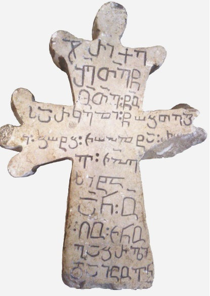

ჰალას ქართული-ხუნძური წარწერა დაღესტნიდან
შინაარსი / Summary
სავედრებელი
ბიბლიოგრაფია Bibliography
კრიტიკული გამოცემა Interpretive Edition
ჯ(უა)რი ქ(რისტ)ე
შ(ეიწყალ)ე თ(ეოდორ)ე წ(მიდა)ო თ(ეოდორ)ე წ(მიდა)ო
სარკელი წობთეგ
5ი ბოტბ ჩაჰლტა რა
ვ ჩჰე
სიტა
ა(მე)ნ ო(ჳფალო)
ღ(მერთ)ო ჩ(უე)ნო
10გაბრ(იე)ლი
დაიცო(ე)ნ
დიპლომატიური გამოცემა Diplomatic Edition
ႿႰႨ ႵႤ
ႸႤ ႧႤ ႼႭ ႧႤ ႼႭ
ႱႠႰႩႤႪႨ ႼႭႡႧႤႢ
5Ⴈ ႡႭႲႡ ႹႠჀႪႲႠ ႰႠ
Ⴅ ႹჀႤ
ႱႨႲႠ
ႠႬ Ⴍ
ႶႭ ႹႬႭ
10ႢႠႡႰႪႨ
ႣႠႨႺႭႬ

ჰალას ქართული-ხუნძური წარწერა დაღესტნიდან
{'ka': 'ჯვარი, ქრისტე შეიწყალე თეოდორე, წმიდაო თეოდორე, წმიდაო სარკელი, წობთეგ ი ბოტბ ჩაჰლტა რა... ვ ჩჰე სიტა,\n ამინ, უფალო ღმერთო ჩუენო, გაბრიელი დაიცუენ.'}
{'default': 'ტექსტში ხშირია ორწერტილი და ქარაგმები; ქარაგმები ხუნძურ ნაწილში მხოლოდ ერთგანაა გამოყენებული. წარწერის თავისებურებანი: პირველი სიტყვა წოდებეთში კი არაა (ჯუარო), როგორც ეს იყო მოსალოდნელი, არამედ - სახელობითში.\n ჯერ შესაწყალებელი თეოდორეა დასახელებული, მერე - შემწყალებელი წმიდანი; ჩვეულებრივი პირიქით არის.\n შესავედრებელ წმინდანად გამოყვანილია „სარკელი“. ასეთი წმინდანი ბერძნულმა და რომაულმა ეკლესიამ არ იცის.\n ეს სიტყვა ჩრდილოურ ხაზარულ სამყაროს მოგვაგონებს: სარკელი - „თეთრი სახლი“ - Белая Вежа ხაზართა ქალაქის სახელადაა ცნობილი.\n არნოლდ ჩიქობავა: „ერთ ხუნძურ აულში სარკილ კაცს ერქვაო, გადმომცა შ. მიქაილოვმა.\n ემინკი-ს მეცნ. თანამშრომელმა მ. გუჯეჯიანმა მიგვითითა, სარაკელ სვანური წყევლის ფორმულაში გვხვდებაო; საკითხი დამატებით ძიებას მოითხოვს.“\n წარწერის ბოლო ნაწილი გაბრიელის დაცვას შესთხოვს უფალს. არნოლდ ჩიქობავას აზრით, შესაძლოა, ეს იყოს წარწერის ამომჭრელი.\n\n არნოლდ ჩიქობავა განიხილავს წარწერის შიგნით მოქცეულ ხუნძურ ფრაზას:\n\n „წობთეგი: ბოტბ: ჩაჰლტა: რა ვ: ჩ`ჰე სიტა“ ხუნძური ჩანს, მიუხედავად იმისა, რომ ამჟამად მთლიანად არაა გარკვეული ფრაზის მნიშვნელობა.\n წობთეგი ორსიტყვიანი გამოთქმაა: წობ - ესაა ხუნძურად წაობ „წყალობა“, თეგი - ხუნძურად ლ’ეგი ნატვრითი კილოს ჩვეულებრივი ფორმაა ზმნისგან ლ’ეზე "დება".\n წობ თეგი „წყალობა დაიდოს“, „შეწყალებულ იქნეს“; ეს ფრაზა ამჟამადაც არ არის უცნობი გამოთქმა: ალლაჰასულ წაობ ლ’ეგი დუდა! - ღვთის წყალობა (დაგედოს) შენ!\n ამ ქარაგმის გახსნა ჯერ-ჯერობით არ ხერხდება. აგრეთვე დაზიანებული ადგილის აღდგენა: რ-ის შემდეგ ჩანს ა-ს თავი.\n\n ქართულ წარწერაში მაგარი წჾ გადმოცემულია ჩვეულებრივით, ლატერალურ სპირანტ ლ\'-ს კი წარწერის ამომჭრელმა თ შეუფარდა. საინტერესოა, რომ თვით ხუნძურშიც,\n სახელდობრ, მის ანწუხურ კილოში ლ\'—>თ; მაგრამ თეგი-ს თ აქ ხუნძურიდან არ უნდა მომდინარეობდეს.\n\n რა...ვ ხუნძური პირველი გრამატიკული კლასის ნიშნით (-ვ-) თავდება. აქ იგი მიმღეობას უნდა ჰქონდეს დართული. რა ზმნისას? საფიქრებელია,\n ეს იყოს ჰჾალტარავ - ზმნისაგან ჰჾალტიზე „მუშაობა“, „დაშვრომა“, - ნამყო დროისა - „დამაშვრალი“, „ნამუშაკევი“. მაგრამ ჩა გვრჩება აუხსნელი, ლ-ასის წინამავალი ა-ც გვაკლია\n (ჰჾ კი შეეძლოთ ჰ-თი გადმოეცათ, - ეს არაა დაბრკოლება); რ-ს შემდეგ დაზიანებული ადგილი ერთზე მეტ ასოს - ორს თუ სამს - გვავარაუდებინებს.\n\n შეიძლებოდა წერტილით გამოყოფილი სიტყვები ცალ-ცალკე დაგვეტოვებინა და რა...ვ დაგვეკავშირებინა ზმნასთან რაღიზე „ბრძოლა“,\n რაღ\'ავ=რაღულავ „მებრძოლი“, воинственный, მაგრამ მაშინ დაქარგმება უნდა ვივარაუდოთ დაზიანებულ ნაწილში.\n\n ჩაჰლტა შეიძლება იყოს ლოკატივი კითხვაზე სად? (ჩაჰლტა ‹- ჩაჰლდა, როგორც ეს ხუნძახის რაიონშია ჩვეულებრივი) და მაშინ ადგილის\n გარემოებასთან გვექნება საქმე; მაგრამ შეუძლებელი არაა ეს იყოს ჩალთა „საბრძოლო ნაჯახი“; ასეთ შემთხვევაში ის მიეკედლებოდა მომდევნო სიტყვას რაღ`ავ = „რაღულავ“.\n\n ჩ\'ჰე ? ჩაფჴენ (ჩაფხენ)- თავდასხმა? სიტა, თუ წინა სიტყვის ბოლო არაა. სი-ს ლოკატივი იქნება:\n სი-კოშკი, სიტა (‹- სიდა) - კოშკი (კოშკზე). -ტა-თი დაბოლოებული ლოკატივი ისევ ხუნძახურ რაიონზე მიგვითითებს.\n\n ბოტბ.... ეს სიტყვა მოსდევს თეგი-ს; უკანასკნელი ზმნაა და მოითხოვს ლოკატივს („წყალობა შენდა... მისდა....“);\n ბოტბ -და / -ტა წარმოების ლოკატივი არაა. მაშასადამე, ბოტბ არ შეიძლება იყოს ის პირი,\n რომლის შეწყალებას სარკელის შესთხოვენ. აქ ისევ გარემოების აღმნიშვნელ სიტყვასთან უნდა გვქონდეს საქმე.\n\n გვერდს ვერ ავუვლით ბო-ს: ბო-ჯარი, მაგრამ ფორმაა გაუგებარი; ბატჿ-ის არაზუსტი გადმოცემა თუა: - „ჯარში“?\n\n ერთი რამ მაინც გამორიცხულია: ბოტბ სიტყვის ბოლოკიდური ბ მესამე კლას-კატეგორიის ნიშნიანი ლოკატივი (ტიპისა - რუყო-ბ, რუყო-ჲ, რუყო-ვ „სახლში“)\n ვერ იქნება: მიმღეობის ვ (რა...ვ) პირველი კლასისა ამას გამორიცხავს (საერთო წესების თანახმად).\n\n ეგევე სამიმღეობო დაბოლოება ცხადყოფს, რომ წარწერა მამაკაცს ეხება და მისთვის შეწყალების გამოთხოვას შეიცავს.“\n\n პალეოგრაფიული ნიშნებით არნოლდ ჩიქობავა წარწერას XIV საუკუნით ათარიღებს; ისტორიული კონტექსტიც ამას უჭერს მხარს:\n თემურ ლენგის შემდეგდროიდელ დაღესტანში ამგვარი ძეგლის აღმართვა სავარაუდებელი არაა,\n მეთოთხმეტე საუკუნეში კი ეკლესიაც კი აშენებულა შიგნით დაღესტანში, ხუნძურ ყოისუს ხეობაში, დათუნში, ხუნძახის რაიონის სამხრეთით.\n\n შაჰბან ჰაფიზოვი ტექსტის V სტრიქონის მეორე სიტყვას ჩაჰლტა-ს მაგიერ კითხულობს როგორც ჩოჰლტა, სხვა ეტიმოლოგიას უძებნის წარწერის ხუნძურ ტექსტს\n და ამგვარ წაკითხვას გვთავაზობს:\n „ჯვარი. ქრისტე, შეიწყალე თეოდორე! წმიდაო თეოდორე, წმიდაო სარკელი! შეიწყალენით ყველა და-ძმა [და] ქმარი. ამინ, უფალო!\n უფალო ჩვენო, გაბრიელი დაიცავ!'}
<div type="edition" xml:lang="ka" ana="mtavruli" xml:space="preserve">
<ab>
<lb n="1"/><w lemma="ქრისტე"><expan><abbr>ქ</abbr><ex>რისტ</ex><abbr>ე</abbr></expan></w>
<w lemma="განსუენება"><expan><abbr>გა</abbr><ex>ნ</ex><abbr>ო</abbr><ex>ჳ</ex><abbr>ს</abbr><ex>უ</ex><abbr>ენე</abbr></expan></w>
<w lemma="სულ">სოჳ<lb n="2" break="no"/>ლსა</w>
<name nymRef="ვაჩა">ვაჩაჲს<lb n="3" break="no"/>ასა</name>
<name nymRef="გურა"><expan><abbr>გო</abbr><ex>ჳ</ex><abbr>რაჲ<lb n="4" break="no"/>სასა</abbr></expan></name>
<name nymRef="მირა"><expan><abbr>მ</abbr><ex>ი</ex><abbr>რა</abbr><ex>ჲ</ex><abbr>ს</abbr><ex>ა</ex><abbr>ს</abbr><ex>ა</ex></expan></name>
</ab>
</div>